Teil 1 · Didaktik 2.2 · Generation 534411b8fa941f9a

Kajo bewahrt bereits berechnete Keys und Values je Stockwerk und Position auf. Bei der Morgenflut wird der Prompt verarbeitet; danach ergänzt jeder Antwortschritt neue K/V-Paare. Frühere Paare können erneut verwendet werden. Das spart Projektionen, braucht aber Speicher. Der Cache ist ein Zwischenspeicher laufender Rechnung. Eine Notiz der Anwendung ist etwas anderes: Sie muss als Text wieder auf den Tisch gelegt werden und belegt dann Kontextplätze.
Vergleiche eine Morgenflut mit mehreren einzelnen Ergänzungen. Räume anschließend Archiv und Tisch leer und frage nach einer früheren Information. Lege dann eine Notiz der Anwendung hinzu.
Neue Antwortstücke ergänzen den laufenden Cache. Nach dem Kehraus fehlt die frühere Information im neuen Kontext und kann nur geraten werden. Mit einer hingelegten Notiz steht sie wieder als Text zur Verfügung. Das Archiv ist kein Speicherpunkt für unbegrenzte persönliche Erinnerungen.
Frage, ob etwas als K/V-Rechnung, aktueller Kontexttext oder äußere Notiz vorliegt. Verwechsle eine gespeicherte Rechnung nicht mit Gewichtstraining oder einem privaten Langzeitgedächtnis.